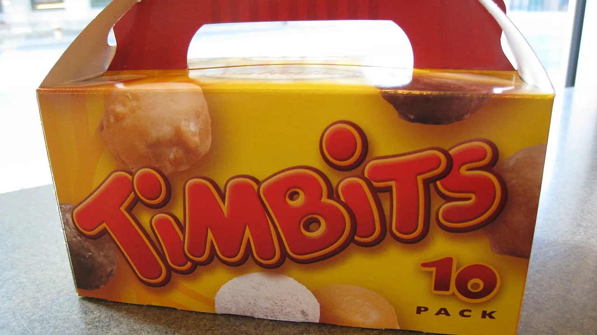

Unofficial fan guide - not affiliated with Tim Hortons
The 2026 holiday lineup has not been announced yet. Here is when it is likely to land, what was on the menu last year, and the holiday promos that come with it.
Full Menu / Blog / Holiday Menu

Tim Hortons has not announced its 2026 holiday menu yet (as of September 28, 2026). In Canada, the holiday lineup launched on November 12, 2025, November 12, 2024 and November 13, 2023, so mid-November 2026 is the likely start. Last year's menu was built around Biscoff, with the Candy Cane Hot Chocolates returning.
Mid-November is the pattern. Tim Hortons Canada has launched its holiday menu in the same week of November for three years in a row, and the lineup stays until late December or while supplies last.
| Season | Canadian launch | Headline theme |
|---|---|---|
| 2023 | November 13, 2023 (drinks); November 20 (donut) | Baileys-flavoured, non-alcoholic |
| 2024 | November 12, 2024 | Baileys returns, plus Nutella items |
| 2025 | November 12, 2025 | Biscoff collaboration |
| 2026 | Not announced (expected mid-November) | — |
One timing clue for 2026: the Pumpkin Spice lineup runs until November 1, 2026, which leaves a gap of about ten days before the usual holiday launch. The U.S. menu comes earlier. Tim Hortons U.S. launched its 2025 holiday lineup on November 5, a week before Canada.
The 2025 Canadian holiday menu had four Biscoff items, two new baked goods and returning Candy Cane drinks. Tim Hortons announced it on November 12, 2025, and it was available across Canada from that day.
| Item | What it is |
|---|---|
| Biscoff Boston Cream | A Boston Cream donut dipped in Biscoff spread and topped with Biscoff cookies |
| Biscoff Filled Croissant | A croissant filled with Biscoff spread and topped with Biscoff cookies |
| Biscoff Latte | Espresso drink finished with whipped topping and Biscoff cookie pieces |
| Biscoff Iced Capp | An Iced Capp blended with Biscoff cookies and topped with more cookie crumble |
The Candy Cane Hot Chocolate and Candy Cane White Hot Chocolate came back, as they also did in 2024. They build on the everyday hot chocolate and white hot chocolate. Two new baked goods launched with them: the Crème Brûlée Filled Timbit and the Chocolate Hazelnut Filled Muffin.
Two brown sugar drinks were also promoted in the holiday release: the Brown Sugar Cream Coffee and the Brown Sugar Protein Iced Latte, which has 17 g of protein in a medium. See also the Brown Sugar Iced Latte.
The 2024 lineup was built around non-alcoholic Baileys flavour. It included a Baileys Dream Hot Chocolate, Baileys Cream Coffee, Baileys Latte, Baileys Iced Capp and a Baileys Boston Cream Dream Donut. Next to them were a Caramel Brownie Filled Ring Dream Donut, a Double Chocolate Brownie, a Hot Chocolate Muffin with marshmallow-flavoured filling, and the Candy Cane Hot Chocolates.
Expect a brand collaboration at the centre and the Candy Cane Hot Chocolates back beside it. Every Canadian holiday menu since 2023 has been built around one partner flavour: Baileys twice, then Biscoff. The Candy Cane drinks were on both the 2024 and 2025 menus.
Anything beyond that is a guess until Tim Hortons announces the lineup. Menus found online that are labelled "2026" but list Biscoff items are describing the 2025 menu. We will update this page when the 2026 lineup is confirmed.
Two promotions usually come with the holiday menu: the Holiday Smile Cookie charity week and, in 2025, a Holiday Meal combo. Both ran for a limited time only.
The Holiday Smile Cookie ran from November 17 to 23, 2025, in both Canada and the U.S. It is a white chocolate sugar cookie with red and green sprinkles, and in Canada 100% of the pre-tax price goes to local charities. See the Tim Hortons Smile Cookie guide for prices and past totals.
The 2025 Holiday Meal cost $14.99 at participating Canadian restaurants from December 9 to December 30, 2025. It included:
Holiday items are sold at participating restaurants and in the app, and they can sell out before the season ends.
Prices for seasonal items are not published nationally, and franchise owners set their own, so a Biscoff Latte can cost more in one city than another. Compare with the everyday prices on our coffee menu and donuts menu.
Tim Hortons has not announced a 2026 date yet. The Canadian holiday menu launched on November 13 in 2023 and November 12 in both 2024 and 2025, so mid-November 2026 is the most likely start.
Tim Hortons has not said. The Biscoff Boston Cream, Filled Croissant, Latte and Iced Capp were the 2025 holiday lineup; each recent year has featured a different partner flavour, and Baileys was the only one used twice.
Yes, seasonally. The Candy Cane Hot Chocolate and Candy Cane White Hot Chocolate returned with the holiday menus in 2024 and 2025, so they are likely to be back in November 2026.
Usually from mid-November until the end of December, while supplies last. The 2025 Holiday Meal combo, for example, ran until December 30, 2025.
In 2025 it ran November 17 to 23. Tim Hortons had not announced 2026 dates as of September 28, 2026, but mid-to-late November is the pattern.
The 2025 Holiday Meal cost $14.99 and included a Flatbread Pizza, one side, a small or medium drink and a pair of collectible socks. It ran December 9 to 30, 2025 at participating Canadian restaurants.
No. Tim Hortons U.S. launched its 2025 holiday menu on November 5 with OREO Peppermint drinks, a Holiday Tree Donut and a Snowman Donut, while Canada's Biscoff lineup arrived on November 12.
No. The Baileys items on the 2023 and 2024 holiday menus were Baileys-flavoured and non-alcoholic.
Recent Canadian holiday donuts include the Biscoff Boston Cream (2025), the Baileys Boston Cream Dream Donut (2023 and 2024) and the Caramel Brownie Filled Ring Dream Donut (2024).
It was promoted as part of the 2025 holiday menu announcement. A medium has 17 g of protein.
No. Tim Hortons does not publish national prices for seasonal items, and franchise owners set their own, so prices vary by city and restaurant. The fixed-price Holiday Meal at $14.99 was an exception.
This is an independent, unofficial guide to the Tim Hortons Canada menu. It is not affiliated with, endorsed by, or sponsored by Tim Hortons or Restaurant Brands International. Holiday lineups and dates come from Tim Hortons' announcements of November 12, 2025, November 12, 2024 and its 2023 Baileys release, the 2025 Holiday Meal announcement (December 9, 2025) and the Tim Hortons U.S. holiday release (November 5, 2025). The 2026 menu has not been announced, and this page will be updated when it is. See Sources.